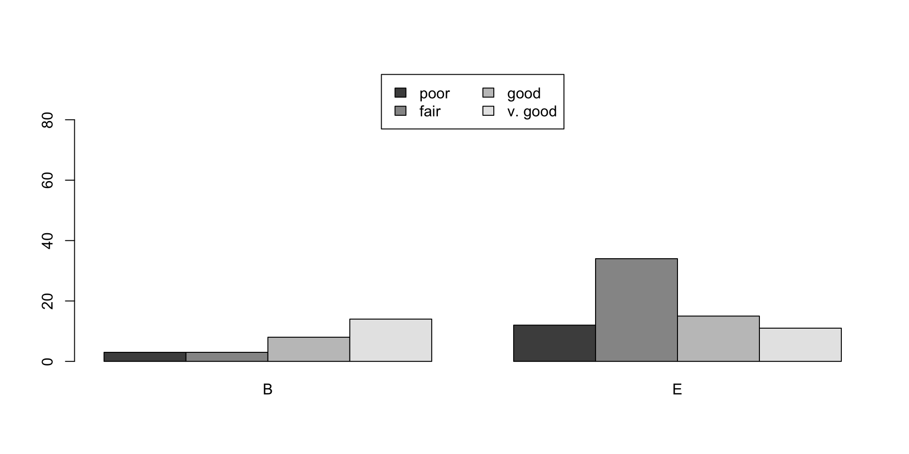

| class | satisfaction |
|---|---|
| E | fair |
| E | v. good |
| E | poor |
| B | good |
| E | poor |
| B | fair |
| E | good |
| B | v. good |
| E | fair |
| B | v. good |
| E | good |
| B | good |
ST201 Data Analysis
Association between Categorical Variables
Association of Two Variables
We are often interested in the interdependence of two or more categorical variables
e.g., we might be interested in whether the satisfaction of airline customers varies w.r.t the travel class (Economy, Business)
e.g., we may want to find out of female employees at a company are paid less than male employees or vice versa. Assume in this example we have two salary categories (low, high).
When both variables are categorical then it is possible to list all combinations of the variables and count how often the combinations occur in the data.
Airline Satisfaction Example
Suppose we have data on two categorical variables.
Contingency Tables
This data can be described in a two-dimensional contingency table.
Marginal and Conditional Distributions
Airline data; N = 100
| poor | fair | good | v. good | |
|---|---|---|---|---|
| B | 3 | 3 | 8 | 14 |
| E | 12 | 34 | 15 | 11 |
Marginal frequency
Marginal frequency distributions are displayed in the last column and last row.
Conditional frequency
Conditional frequency distributions give us an idea about the behaviour of one variable when the other one is kept fixed.
Marginal Distributions
| poor | fair | good | v. good | |
|---|---|---|---|---|
| B | 3 | 3 | 8 | 14 |
| E | 12 | 34 | 15 | 11 |
Marginal Distributions
| poor | fair | good | v. good | |
|---|---|---|---|---|
| B | 3 | 3 | 8 | 14 |
| E | 12 | 34 | 15 | 11 |
| poor | fair | good | v. good | Sum | |
|---|---|---|---|---|---|
| B | 0.03 | 0.03 | 0.08 | 0.14 | 0.28 |
| E | 0.12 | 0.34 | 0.15 | 0.11 | 0.72 |
| Sum | 0.15 | 0.37 | 0.23 | 0.25 | 1.00 |
Conditional Distributions
| poor | fair | good | v. good | |
|---|---|---|---|---|
| B | 3 | 3 | 8 | 14 |
| E | 12 | 34 | 15 | 11 |
The probability of satisfaction conditional on Business class
poor fair good v. good
0.1071429 0.1071429 0.2857143 0.5000000 The probability of satisfaction conditional on Economy class
poor fair good v. good
0.1666667 0.4722222 0.2083333 0.1527778 tab <- table(airline)
# The probability of satisfaction conditional on Business class
cond_prob_B <- tab[1,]/sum(tab[1,])
# The probability of satisfaction conditional on Economy class
cond_prob_E <- tab[2,]/sum(tab[2,])
cond_prob_B; cond_prob_E poor fair good v. good
0.1071429 0.1071429 0.2857143 0.5000000 poor fair good v. good
0.1666667 0.4722222 0.2083333 0.1527778 Visualisation - Barplots
Are these plots providing the same information?


Barplots


Barplots


Expected counts in two-way tables
Thinking about a hypothesis
While we would not expect the satisfaction to be exactly the same across the classes, the rate of satistaction seems different across the two groups. In order to investigate whether the differences in satisfaction is due to natural variability in people’s honesty or due to a treatment effect (i.e., what seat that sat in), we need to compute expected (estimated) counts for each cell in a two-way table.
Independence and Expected Frequencies
- Two variables are considered to be independent if the observations on one variable do not effect the observation on another variable.
Expected Frequencies
The expected frequencies under independence are given by
\[E_{\text{row } i, \text{col } j} = \frac{(\text{row i total})(\text{column j total})}{\text{grand total}} \]
- For the airline data these are
| poor | fair | good | v. good | |
|---|---|---|---|---|
| B | 4.2 | 10.36 | 6.44 | 7 |
| E | 10.8 | 26.64 | 16.56 | 18 |
Pearson’s \(\chi^2\) Statistic
Pearson’s \(\chi^2\) statistics is used for measuring association between variables in a contingency table.
The chi-squared test statistic for a two-way table is found by finding the ratio of how far the observed counts are from the expected counts, as compared to the expected counts, for every cell in the table.
\(\chi^2\) statistic
The \(\chi^2\) statistic is given as:
\[\chi^2 = \sum_i \sum_j\frac{(O_{ij}-E_{ij})^2}{E_{ij}}\]
Chi-squared distribution
The chi-squared test statistic has a mathematical distribution called the Chi-squared distribution.
The important specification to make in describing the chi-squared distribution is something called degrees of freedom.
Different chi-squared distributions correspond to different degrees of freedom.
For two way tables, the degrees of freedom is equal to: \(df\) = (number of rows minus 1) \(\times\) (number of columns minus 1).
- In our airline example, the degrees of freedom parameter is: \(df = (2-1)*(4-1) = 3\) .
Chi-squared test of independence
We will use the chi-squared test statistic and the chi-squared distribution to do a hypothesis test for independence for a two-way table.
- the null hypothesis is independence
- the alternative hypothesis is no independence
The test statistic for assessing the independence between two categorical variables is a chi-squared (\(\chi^2\)) test statistic
The statistic is a ratio of how the observed counts vary from the expected counts as compared to the expected counts.
When the null hypothesis is true and some conditions are met, the test statistic has a Chi-squared distribution with \(df = (R-1) \times (C-1).\)
Conditions:
Independent observations
Large samples: 5 expected counts in each cell
Chi-squared test of independence
For the airline data, if the null hypothesis is true (i.e., class has no impact on satisfaction), then the test statistic (\(\chi^2 = 17.99\)) is expected to follow a Chi-squared distribution with 3 degrees of freedom.
Using this information, we can compute the p-value for the test.
In Summary
When associations between variables is stronger, then the deviation between observed and expected frequencies are higher.
A chi-squared (\(\chi^2\)) test statistic summarises these deviations.
For the airline data \(\chi^2 = 17.99\).
If there was independence then this value (17.99) is considered very unusual, actually we would only expect to see it less than 5% of the time.
In other words, for the airline data the chance of seeing a value as large as 17.99, if class and satisfaction are independent is < 5%
We conclude (because it seems more likely) that satisfaction and airline class are independent.